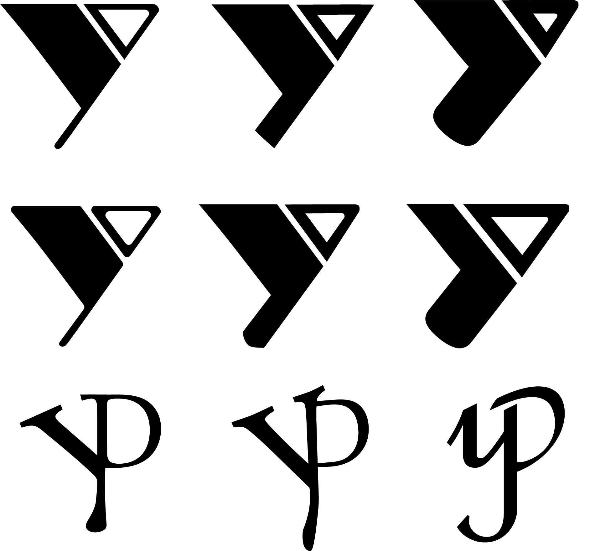

In this project we are creating an id card for any organization with a designed personal monogram, so I created this id card for me for Studio Degen.
I tried to use the color contrast between black and white. I combined the contrast with the parts of the monogram and my full name to highlight the parts of it while also making it easier to read in the context of my full name.
I created two different designs for this id card. Here is the other version.


I designed my monogram first and this is the final design of it. It is a letter "y" and a "D" of two different typeface combined and formed this shape that looks like "y" and "p", which stand for "yi-ping" which is the first two letters of my name if it is in Chinese.

The monogram design went through many variations. It started with three pages of sketches, and I made the few I liked the most into digital.
Among the first three, I like the third one the most because of the simplicity and modern look of it. However, once I did more variations on it, I started losing interest in it, also because of several others mention that it remind them of the logo of YMCA, so I went toward the direction of forming yp with yD, which ended up as my final design shown before.
The original typefaces of this design are "Alexa Std" for the D and "French Script MT" for the y.
